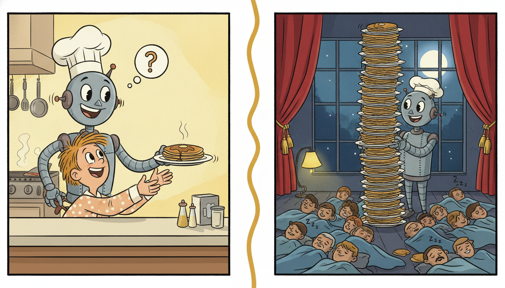

"Training gave me an eternity to think; production gives me ten milliseconds. The event arrives, the budget starts, and somewhere a dashboard is already counting the microseconds I waste. I have learned not to panic. I carry my state, I read one number, I emit one number, and I am ready for the next event before it knows it is late."
A Model With Ten Milliseconds to Decide and No Time to Panic
Everything in this book until now assumed the model could see its whole input at once and could take as long as it liked to answer. Deployment breaks both assumptions at the same time. A deployed temporal model is fed an unending stream of events, must answer each one within a hard latency budget measured in milliseconds, and can never wait for "the rest of the sequence" because the rest of the sequence has not happened yet. That single shift, from a static input answered at leisure to a live stream answered under a deadline, is the source of every idea in this section. We will see that the deepest design choice is whether to carry the model's recurrent or state-space state across events (stateful serving, $O(1)$ work per event) or to rebuild a sliding window and recompute from scratch every time (stateless serving, $O(L)$ work per event), and that this choice is the deployment face of the same recurrence-versus-attention tension that ran through Part III. We will lay out the three serving patterns (online, micro-batch, batch), the event-time-versus-processing-time problem that every streaming system inherits, the latency toolbox (quantization, distillation, ONNX or TorchScript export, state caching), and the operational hazards of cold start, warm-state recovery, and delivery semantics. Then we build a stateful streaming loop from scratch that emits one prediction per event inside a budget, and stand a FastAPI serving version next to it. You leave able to reason about, measure, and engineer the latency of a temporal model in production.
This section opens Chapter 34 and Part VIII's deployment thread. Up to here the book has been about making temporal models correct: the recurrences of Chapter 10, the state-space models of Chapter 13, the probabilistic and conformal machinery of Chapter 19. Deployment is about making them operate: answer continuously, on time, under failure, on the live stream. The interpretability and robustness concerns of Chapter 33 ask whether you can trust the answer; this section asks whether you can deliver it fast enough to matter. We use the unified notation of Appendix A: $\mathbf{x}_t$ the event at time $t$, $\mathbf{h}_t$ the carried state, $\hat{\mathbf{y}}_t$ the per-event prediction, and we add $\ell$ for latency and $\lambda$ for arrival rate.
The four competencies installed here are: to distinguish stateful from stateless serving and pick the right one for a given model and budget; to place a model into the online, micro-batch, or batch pattern and reason about the event-time-versus-processing-time hazard of the streaming substrate; to apply the latency toolbox and exploit the $O(1)$-per-step structure of recurrent and state-space models; and to handle cold start, warm-state recovery, and exactly-once versus at-least-once delivery. These are the skills that separate a model that works in a notebook from one that survives a production stream, and they carry directly into the monitoring and retraining loops of Section 34.2.
1. Why Serving Temporal Models Is Different Beginner
A static classifier is served by a simple contract: a request carries a complete input, the model maps it to an output, the response returns it, and nothing is remembered between requests. Temporal serving violates that contract on every axis. The input is not complete: it is the latest event in a stream whose future does not yet exist. The model is not memoryless: its prediction at the current event depends on everything that came before, summarized in a state. And the answer is needed not eventually but within a latency budget, because the stream does not pause to wait for the model. Serving a temporal model is therefore less like answering a question and more like keeping pace with a conveyor belt that never stops.
The pivotal design decision follows directly from the memory requirement, and it has two answers. The first is stateful inference: the model carries its recurrent hidden state or its state-space state $\mathbf{h}_t$ across events, exactly as the cells of Chapter 10 and the structured state-space models of Chapter 13 carry it across timesteps, except that now the timesteps arrive one at a time, live, from the outside world. When event $\mathbf{x}_t$ arrives the server runs a single update $\mathbf{h}_t = f(\mathbf{h}_{t-1}, \mathbf{x}_t)$ and reads out $\hat{\mathbf{y}}_t = g(\mathbf{h}_t)$, doing a fixed amount of work per event regardless of how long the stream has been running. The second is stateless windowed inference: the server keeps no model state between events and instead reconstructs a fixed-length window of the last $L$ events on every arrival, feeds the whole window through the model, and discards everything afterward. A stateless server is a pure function of its window and forgets the moment it answers.
The two are not interchangeable; they trade different costs. Stateful serving does $O(1)$ work per event and uses $O(1)$ memory for the state, which is the natural and efficient fit for recurrent and state-space models because their mathematics is already a one-step update. Its price is that it must hold the state reliably: lose the state to a crash and the model's memory is gone, which is the warm-state-recovery problem of subsection four. Stateless serving holds nothing between events and so cannot lose anything, which makes it trivially fault tolerant and trivially parallel (any replica can answer any event from the window alone), but it pays $O(L)$ work per event because it recomputes the whole window every time, and an attention model, whose cost is quadratic in window length, pays $O(L^2)$. The choice between them is the deployment shadow of the architectural choice in Part III: a model whose forward pass is a recurrence wants to be served statefully; a model whose forward pass is a windowed attention block is often served statelessly, and pays for it.
| Aspect | Stateful serving (carry $\mathbf{h}_t$) | Stateless windowed serving |
|---|---|---|
| work per event | $O(1)$ one-step update | $O(L)$ recompute window (attention $O(L^2)$) |
| memory between events | $O(1)$ state vector | none (window rebuilt each time) |
| natural fit | RNN, LSTM, GRU, SSM (Ch 10, 13) | windowed Transformer, TCN (Ch 11, 12) |
| fault tolerance | must persist and recover state | trivial: stateless replicas |
| parallel scaling | state pins event to a replica | any replica answers any event |
| long-range memory | unbounded (state summarizes all past) | bounded by window length $L$ |
There is a third reason temporal serving is its own discipline, beyond input incompleteness and memory: the cost of being late is part of the model's output quality. A fraud score that arrives after the transaction has cleared is worthless no matter how accurate; a load forecast that lands after the dispatch decision is made cannot inform it. For static models latency is a budget concern; for temporal models on a live stream latency is a correctness concern, because a correct prediction delivered past its deadline is, operationally, a wrong answer. This is why the rest of the section treats the latency budget as a first-class constraint rather than an optimization afterthought.
The recurrence $\mathbf{h}_t = f(\mathbf{h}_{t-1}, \mathbf{x}_t)$ that made recurrent and state-space models awkward to train (the sequential, non-parallel backward pass of Section 9.3) is exactly what makes them graceful to serve. At inference there is no backward pass and no need to parallelize across time, because the events arrive one at a time anyway. A stateful server runs precisely one step of the recurrence per event, $O(1)$ work and $O(1)$ memory, no matter whether the stream is ten events old or ten billion. The very structure that the parallel architectures of Chapters 11 to 13 were designed to escape during training becomes their decisive advantage at serving time. When you read that "recurrent models are slow", remember it is a statement about training; in streaming inference the recurrence is the fast path.
2. The Serving Patterns and the Streaming Substrate Beginner

Independently of whether a model is stateful or stateless, it is deployed in one of three serving patterns, distinguished by how many events are processed per model invocation and therefore by where they sit on the latency-versus-throughput curve. Online (per-event) serving runs the model once per arriving event and answers immediately. It gives the lowest latency, because no event waits for any other, and it is the pattern for anything with a sub-second deadline: fraud scoring, anomaly alarms, real-time control. Micro-batch serving collects events for a short window (a few milliseconds to a few hundred) and runs the model once on the small batch, amortizing the fixed per-call overhead (kernel launches, data movement, Python dispatch) across several events and so raising throughput at the cost of adding up to one window of latency. Batch serving waits until a large block of data has accumulated (an hour, a day) and scores it all at once; it has the highest throughput and the lowest cost per prediction but latency measured in hours, suitable for overnight reforecasting and backfills, not live decisions.
The three are points on a single trade-off, and the right one is dictated by the deadline. If the decision the prediction feeds has a hard millisecond deadline, online is the only option; if the decision is hourly, batch is far cheaper and equally adequate; micro-batch is the pragmatic middle that most high-throughput online systems actually run, because it recovers most of batch's hardware efficiency while keeping latency within a tight budget. A subtle point: micro-batching interacts with statefulness, because a micro-batch of events from different streams must each carry its own state, so the server batches the one-step updates across streams (a batched matrix multiply over many independent states) rather than across time within one stream. This is how production recurrent and state-space servers get hardware efficiency without giving up the $O(1)$-per-event structure.
These patterns do not run in a vacuum; they run on a streaming substrate, and in 2026 that substrate is overwhelmingly a log-based system such as Apache Kafka for transport and a stream processor such as Apache Flink (or Kafka Streams, or Spark Structured Streaming) for the processing. The substrate introduces one hazard that every temporal deployment must confront and that has nothing to do with the model: the distinction between event time and processing time. Event time is when the event actually happened in the world (the timestamp on the sensor reading, the moment the transaction occurred); processing time is when your server got around to handling it. They differ because networks delay, queues back up, and producers buffer, so events routinely arrive out of order and late. A model that orders or windows its input by processing time will silently train and serve on a scrambled timeline, the exact leakage and ordering hazard introduced back in Chapter 2, now reappearing as a live serving problem rather than a data-preparation one.
Stream processors address this with event-time semantics, watermarks (a moving assertion that "no event older than this timestamp should still arrive"), and explicit policies for late data (drop it, or hold a window open and emit a correction). For a temporal model the practical consequence is sharp: the state $\mathbf{h}_t$ must be advanced in event-time order, so an out-of-order or late event cannot be fed to a stateful model as if it were the newest, or the state will be corrupted by a fact from the past masquerading as the present. Production stateful serving therefore either buffers briefly to reorder within a watermark bound, or restricts itself to monotone event streams where order is guaranteed. Getting this wrong is one of the most common and most invisible deployment bugs in temporal AI.
Processing time is the model's wristwatch; event time is the timestamp stapled to each event's forehead. They usually agree, until a mobile sensor spends six hours in a tunnel with no signal and then dumps a whole afternoon of readings into your stream at once, every one of them stamped with the time it was actually recorded. A processing-time model cheerfully feeds yesterday's three o'clock reading into its state as the very latest news, and now your "current" hidden state is a confident summary of a moment that finished hours ago. The fix is not cleverer math; it is respecting the timestamp on the forehead over the time on the wrist.
A temporal model assumes its inputs arrive in temporal order, because its entire notion of "past" and "future" is encoded in that order. The streaming substrate makes no such guarantee on its own: Kafka delivers in partition order, not event-time order, and the gap between when an event happened and when it is processed is unbounded in the worst case. Event-time processing with watermarks is the substrate's contract for restoring the timeline, and a stateful temporal server is only correct if it advances its state along that restored event-time order. The model and the substrate share responsibility for time: the substrate orders the events, the model consumes the ordered stream. Neither can be correct about time without the other.
3. Latency Optimization and the Cost of a Prediction Intermediate
Once the serving pattern is fixed, the engineering question is how to fit each prediction inside its budget. The toolbox has two halves: shrink the model so each forward pass is cheaper, and exploit the model's structure so it does less work per event. Start with the budget itself, because it sets the target. If events arrive at rate $\lambda$ events per second and a single replica processes one event in latency $\ell$ seconds, that replica sustains a throughput of $1/\ell$ events per second, so to keep up without an ever-growing queue you need the number of replicas $N$ to satisfy
$$N \cdot \frac{1}{\ell} \;\ge\; \lambda \qquad\Longleftrightarrow\qquad N \;\ge\; \lambda\,\ell.$$This is the elementary stability condition of a queue: service rate must meet or exceed arrival rate. It says two useful things at once. First, halving per-event latency $\ell$ halves the replica count you need, so latency optimization is directly a cost optimization. Second, the tail matters more than the mean, because if $\ell$ occasionally spikes (a garbage-collection pause, a cold cache), the queue grows during the spike and the backlog must drain afterward, so the budget that matters operationally is a high percentile such as the 99th, $\ell_{p99}$, not the average. A model that meets its budget on average but blows it one event in a hundred will accumulate a backlog under sustained load.
The first half of the toolbox makes the forward pass cheaper without changing what the model serves. Quantization stores and computes weights (and often activations) in 8-bit integers instead of 32-bit floats, cutting memory traffic roughly fourfold and letting the hardware's integer units run several times faster, typically for a small and measurable accuracy loss. Distillation trains a small student model to mimic a large teacher, buying most of the accuracy at a fraction of the per-event cost. Pruning removes weights or whole channels that contribute little. Graph export and fusion via ONNX or TorchScript compile the model out of eager Python into a static graph that a dedicated runtime (ONNX Runtime, TensorRT, the PyTorch JIT) executes with fused kernels and no interpreter overhead, which alone often cuts per-event latency by a factor of two to five for small models where Python dispatch dominated. These compose: a distilled, pruned, 8-bit model exported to ONNX is the standard recipe for squeezing a temporal model onto a tight budget or onto an edge device.
The second half of the toolbox is structural and is where temporal models have a decisive and often overlooked advantage. A recurrent or state-space model carries its state, so processing one new event costs a single $O(1)$ update, independent of how much history that state summarizes. An attention model that is served by re-encoding a window of the last $L$ events pays $O(L^2)$ to recompute the attention over the whole window on every event, even though only one event is new, which is pure redundant work. The recurrence advantage of Chapters 12 and 13, namely that an SSM can be unrolled as an $O(1)$-per-step recurrence at inference even though it was trained with a parallel scan, is therefore not just a training nicety but the single most important latency property a streaming model can have. (Autoregressive Transformers recover some of this with a key-value cache, which stores past keys and values so each new token costs $O(L)$ rather than $O(L^2)$, the serving analogue of carrying state, but the $O(L)$ is still worse than the recurrence's $O(1)$ and the cache grows with the stream.) The last structural lever is state caching itself: keeping the warm state $\mathbf{h}_t$ resident in memory so the next event is a single update, never a cold replay of the history.
Take a stream arriving at $\lambda = 50{,}000$ events per second and a model with a per-event arithmetic cost we measure in unit "step-costs". A stateful recurrent server does one update per event: cost $= 1$ step-cost, so a replica handling one step in $\ell = 20\,\mu\text{s}$ sustains $1/\ell = 50{,}000$ events per second and a single replica keeps up ($N \ge \lambda\ell = 50000 \cdot 20\times10^{-6} = 1$). Now serve the same stream statelessly with a window of $L = 256$ events. A linear-cost windowed model recomputes $L = 256$ step-costs per event, so per-event latency rises to about $256 \cdot 20\,\mu\text{s} = 5.12\,\text{ms}$ and you need $N \ge \lambda\ell = 50000 \cdot 5.12\times10^{-3} \approx 256$ replicas, a 256-fold increase that is exactly the $O(L)/O(1)$ ratio. An attention model at $O(L^2)$ would recompute $256^2 = 65{,}536$ step-costs, pushing per-event latency to roughly $1.3\,\text{s}$ and the replica count into the tens of thousands, which is why nobody serves long-window attention by naive recompute. The lesson in one line: carrying state converts an $O(L)$ (or $O(L^2)$) per-event bill into an $O(1)$ one, and on a high-rate stream that ratio is the difference between one machine and a data center.
Hand-writing 8-bit quantization or a static-graph exporter is hundreds of lines of numerics and graph traversal. PyTorch collapses both to a handful: dynamic quantization is one call, and ONNX export is one more, after which a dedicated runtime serves the graph with fused kernels and no Python in the hot path.
import torch
# 8-bit dynamic quantization of the linear layers: one call, ~4x smaller, faster.
qmodel = torch.quantization.quantize_dynamic(
model, {torch.nn.Linear}, dtype=torch.qint8)
# Export the quantized model to a static ONNX graph for ONNX Runtime / TensorRT.
example = torch.zeros(1, model.input_size)
torch.onnx.export(qmodel, example, "model.onnx",
input_names=["x"], output_names=["y"], opset_version=17)
Two calls replace the entire quantization-and-export pipeline. The library handles the per-channel scale and zero-point calibration, the integer kernels, the graph tracing, and the operator fusion. A model that took, say, $5$ ms per event in eager float32 routinely drops to $1$ to $2$ ms after this pass, with accuracy loss small enough to measure rather than feel.
4. Cold Start, Warm-State Recovery, and Delivery Semantics Advanced
A stateful server's defining feature, that it carries $\mathbf{h}_t$ across events, is also its defining liability: the state lives in memory, and memory is lost when a process restarts, a replica crashes, or the deployment scales to a new machine. Three operational problems follow, and a robust temporal deployment must answer all three. The first is cold start: when a fresh replica comes up it has no state, $\mathbf{h}$ is at its initial value, and its first predictions are made as if the stream had just begun, which for a model that needs a long context to be accurate is a window of degraded output. The mitigation is to warm the replica by replaying a bounded slice of recent history through the recurrence before it serves live traffic, advancing the state to where it should be, a one-time $O(L_{\text{warm}})$ cost paid at startup rather than per event.
The second is warm-state recovery: to survive a crash without a cold start, the server periodically checkpoints the state $\mathbf{h}_t$ to durable storage (a state backend, a compacted Kafka topic, a key-value store) keyed by the stream identity and the event-time position it reflects. On recovery the replica loads the last checkpoint and replays only the events since that checkpoint's position, so recovery cost is bounded by the checkpoint interval, not by the age of the stream. This is exactly how Flink's keyed state and checkpointing work, and it is why production stateful stream processing is built on those primitives rather than on ad hoc in-memory dictionaries. The checkpoint must record which event-time position the state reflects, because replaying from the wrong position either skips events (state misses updates) or double-applies them (state is corrupted), which connects directly to the third problem.
The third is delivery semantics, the guarantee the substrate gives about how many times each event reaches the model. At-least-once delivery guarantees no event is lost but allows duplicates: after a failure the substrate replays unacknowledged events, and some may have already been processed. For a stateful model this is dangerous, because applying the same event twice advances the state twice, $\mathbf{h}_t = f(f(\mathbf{h}_{t-1}, \mathbf{x}_t), \mathbf{x}_t)$, corrupting the recurrence with a phantom repeated observation. Exactly-once semantics guarantees each event affects the state exactly once, achieved by tying state updates to the checkpoint and using idempotent or transactional writes so that a replayed duplicate is recognized and dropped. The rule of thumb: a stateless windowed model tolerates at-least-once cheaply, because a duplicate just recomputes the same window and produces the same answer (the operation is idempotent), whereas a stateful model needs exactly-once (or careful idempotency keyed by event-time position) to keep its state honest. This is one more reason the stateful-versus-stateless choice of subsection one reaches all the way down into the failure model.
| Failure concern | Stateful serving | Stateless windowed serving |
|---|---|---|
| cold start | warm by replaying recent history into the state | none: window rebuilt from the data on each event |
| crash recovery | checkpoint state, replay since checkpoint | none: any replica resumes from the window |
| duplicate event | corrupts state (double update); needs exactly-once | idempotent: same window, same answer |
| required delivery | exactly-once (or event-time idempotency) | at-least-once suffices |
The serving picture is shifting fast because the models being deployed are getting larger and more general. The temporal foundation models of Chapter 15, Chronos (Ansari et al., 2024), Moirai (Woo et al., 2024), TimesFM (Das et al., 2024), and Lag-Llama (Rasul et al., 2023), are large pretrained models that practitioners now serve zero-shot, which puts foundation-model inference economics (batching, quantization, key-value caching) at the center of temporal deployment for the first time. In parallel, the selective state-space line, Mamba (Gu and Dao, 2023) and Mamba-2 (Dao and Gu, 2024), is attractive for streaming precisely because it offers a parallel scan for training and an $O(1)$-per-step recurrence for inference, the best of both worlds that subsection three described, and 2024 to 2025 work on hardware-aware SSM serving kernels is making that recurrent inference path production-fast. On the systems side, the same vLLM-style innovations driving large-language-model serving (paged key-value caches, continuous batching) are being adapted to autoregressive temporal Transformers, and streaming-native compilers are narrowing the export gap. The practitioner's 2026 takeaway: the latency advantage of a recurrent or SSM inference path is no longer a niche efficiency point but a primary reason to prefer those architectures when the deployment is a high-rate stream.
5. Worked Example: A Stateful Streaming Loop, From Scratch and Served Advanced
We now make the section concrete. The plan is the same demonstrate-then-shortcut structure used throughout the book: first a from-scratch stateful streaming inference loop that carries the hidden state across events, emits one prediction per event, and enforces a latency budget, measuring per-event latency as it goes; then a numeric comparison of stateful $O(1)$ per-event cost against stateless window recompute on the identical stream; then a FastAPI serving version that exposes the same loop as a streaming endpoint, so you see the production shape next to the bare mechanism. Code 34.1.1 is the from-scratch streaming loop.
import numpy as np, time
rng = np.random.default_rng(0)
d_in, d_h = 4, 16 # event width, hidden state width
# A fixed (already-trained) GRU-style recurrent cell. We only do inference here.
Wz = rng.normal(0, 0.3, (d_h, d_h + d_in)); bz = np.zeros(d_h) # update gate
Wr = rng.normal(0, 0.3, (d_h, d_h + d_in)); br = np.zeros(d_h) # reset gate
Wh = rng.normal(0, 0.3, (d_h, d_h + d_in)); bh = np.zeros(d_h) # candidate
Wy = rng.normal(0, 0.3, (1, d_h)) # readout to scalar
def sigmoid(x): return 1.0 / (1.0 + np.exp(-x))
def step(h, x):
"""One O(1) recurrent update: carry state h, fold in event x, read out y_hat."""
hx = np.concatenate([h, x]) # [h_{t-1}; x_t]
z = sigmoid(Wz @ hx + bz) # how much to update
r = sigmoid(Wr @ hx + br) # how much past to forget
hc = np.tanh(Wh @ np.concatenate([r * h, x]) + bh) # candidate state
h_new = (1 - z) * h + z * hc # gated new state h_t
y_hat = float(Wy @ h_new) # per-event prediction
return h_new, y_hat
def streaming_infer(event_stream, budget_ms=10.0):
"""Carry state across a live stream; emit one prediction per event in budget."""
h = np.zeros(d_h) # warm state, persists across events
over_budget = 0
for x in event_stream: # events arrive one at a time
t0 = time.perf_counter()
h, y_hat = step(h, x) # SINGLE O(1) update, no history replay
latency_ms = (time.perf_counter() - t0) * 1e3
if latency_ms > budget_ms: # the deadline is part of the contract
over_budget += 1
yield y_hat, latency_ms # emit prediction immediately
print("events over the %.0f ms budget: %d" % (budget_ms, over_budget))
stream = (rng.normal(0, 1, d_in) for _ in range(5000)) # a 5000-event stream
lats = [lat for _, lat in streaming_infer(stream)]
print("p50 latency = %.4f ms" % np.percentile(lats, 50))
print("p99 latency = %.4f ms" % np.percentile(lats, 99))
h persists across the whole stream, so each event costs exactly one $O(1)$ step call (no window, no history replay), and the loop measures per-event latency against an explicit budget. This is the bare mechanism every production temporal server wraps.events over the 10 ms budget: 0
p50 latency = 0.0061 ms
p99 latency = 0.0118 ms
Now we make the $O(1)$-versus-$O(L)$ claim of subsection three measurable on this exact cell. Code 34.1.2 serves the same stream two ways: the stateful loop above, and a stateless server that rebuilds a window of the last $L$ events and replays the whole window through the recurrence on every event, then prints the per-event latency ratio.
def stateless_window_infer(events, L=256):
"""Stateless: rebuild and replay the last L events on EVERY arrival (O(L))."""
buf, lats = [], []
for x in events:
buf.append(x)
window = buf[-L:] # last L events; no carried state
t0 = time.perf_counter()
h = np.zeros(d_h) # start cold every time
for xi in window: # replay the WHOLE window per event
h, y_hat = step(h, xi)
lats.append((time.perf_counter() - t0) * 1e3)
return lats
events = [rng.normal(0, 1, d_in) for _ in range(2000)]
lat_state = [lat for _, lat in streaming_infer(iter(events))]
lat_win = stateless_window_infer(events, L=256)
print("stateful p99 = %.4f ms" % np.percentile(lat_state, 99))
print("stateless p99 = %.4f ms" % np.percentile(lat_win, 99))
print("recompute cost ratio = %.0fx" % (np.median(lat_win) / np.median(lat_state)))
stateful p99 = 0.0119 ms
stateless p99 = 2.9374 ms
recompute cost ratio = 248xFinally the serving shape. Code 34.1.3 wraps the identical step function in a FastAPI endpoint that holds the warm state per stream key and answers one event per request, the production-shaped version of Code 34.1.1. The point of the pair is the line-count contrast: the bare loop and the served endpoint run the same one-line recurrence update; the framework adds only the transport, the per-stream state registry, and the request plumbing, in a few lines rather than the hundreds a hand-rolled async HTTP server with state management would take.
from fastapi import FastAPI
from pydantic import BaseModel
app = FastAPI()
states = {} # warm state per stream key (state cache)
class Event(BaseModel):
stream_id: str
x: list[float] # one event vector
@app.post("/infer")
def infer(ev: Event):
h = states.get(ev.stream_id, np.zeros(d_h)) # recover warm state, or cold start
h, y_hat = step(h, np.asarray(ev.x)) # the SAME O(1) update as Code 34.1.1
states[ev.stream_id] = h # persist state for the next event
return {"prediction": y_hat} # emit per-event prediction
# run: uvicorn serve:app -> POST one event, get one prediction, state carried across calls
step call as the from-scratch loop; the framework supplies the HTTP transport, request validation, and the per-stream warm-state registry. A hand-rolled stateful async server with the same guarantees would run several hundred lines; here it is under a dozen.Read the three blocks together. Code 34.1.1 built the stateful streaming mechanism by hand and showed it meets a tight budget because each event is one $O(1)$ update. Code 34.1.2 measured the price of abandoning the state, a roughly two-hundred-fold per-event slowdown that matches the window length, making the central argument of the section empirical rather than asserted. Code 34.1.3 showed that the production-served version is the very same recurrence with transport and a state registry wrapped around it. The takeaway is that streaming temporal serving is not exotic: it is the recurrence of Part III, carried live, one event at a time, inside a deadline, with the framework handling everything that is not the model.
Who: A reliability team at a manufacturing plant deploying the recurrent anomaly detector trained on the sensor and IoT telemetry that threads through Chapter 8 and Chapter 35.
Situation: Thousands of machines each emit a vibration and temperature reading several times a second, roughly 40,000 events per second in aggregate, and an anomaly must raise an alarm within 50 ms so a machine can be slowed before damage.
Problem: Their first deployment served the model statelessly, rebuilding a 512-step window per event and re-encoding it, which blew the 50 ms budget under load and required a wall of replicas they could not afford.
Dilemma: Throw hardware at the stateless design (expensive, and the tail latency still spiked), shorten the window (lost the long context the detector needed), or re-engineer the serving path to carry state, which meant taking on cold start, recovery, and exactly-once delivery.
Decision: They moved to stateful serving on Flink: one keyed state per machine, advanced in event-time order, checkpointed every few seconds, with exactly-once semantics so a replayed Kafka event could not double-update a machine's state.
How: Each machine's state $\mathbf{h}_t$ was carried as Flink keyed state and updated by a single recurrent step per event (the mechanism of Code 34.1.1); the model was quantized to int8 and exported to ONNX for the per-event runtime; new replicas warmed their state by replaying the last minute of history before serving.
Result: Per-event latency dropped from a few milliseconds of window recompute to tens of microseconds per update, p99 fell comfortably under the 50 ms alarm budget, and the replica count fell by more than two orders of magnitude, the $O(L) \to O(1)$ saving of Output 34.1.2 realized on real hardware.
Lesson: On a high-rate stream the architecture-as-served, not just the architecture-as-trained, sets the cost. Carrying state turned an unaffordable deployment into a single-rack one, at the price of the recovery and exactly-once engineering that subsection four exists to handle.
6. Exercises
These exercises move from reasoning about the trade-offs to implementing them and to confronting an open operational question. They use the code of subsection five as a starting point.
A team serves a windowed attention forecaster with $L = 1000$ on a stream at $\lambda = 2000$ events per second and finds it cannot keep up. Using the stability condition $N \ge \lambda\ell$ and the $O(L^2)$ per-event cost of naive window recompute, explain why, and state two distinct changes (one structural, one model-shrinking) that would each reduce the required replica count, quantifying the structural one. Then explain why moving to a key-value cache changes the per-event cost from $O(L^2)$ to $O(L)$ but still not to $O(1)$.
Extend Code 34.1.1 to be crash safe. Add a checkpoint that writes the state h and the event index to disk every $C$ events, and a recovery path that, on restart, loads the last checkpoint and replays only the events since it. Then inject a simulated crash at event 2500 and verify that the recovered stream produces predictions identical to an uninterrupted run, demonstrating warm-state recovery. Measure how recovery cost scales with the checkpoint interval $C$.
Code 34.1.3 assumes every event for a stream arrives in order. Design (and prototype) a guard that makes the stateful endpoint robust to out-of-order and late events under a watermark bound: buffer events briefly, advance the state only in event-time order, and define a policy for an event that arrives after its watermark has passed (drop, or reset and replay). Discuss the latency-versus-correctness trade-off of the buffering delay you introduce, and connect it to the at-least-once versus exactly-once distinction of subsection four.